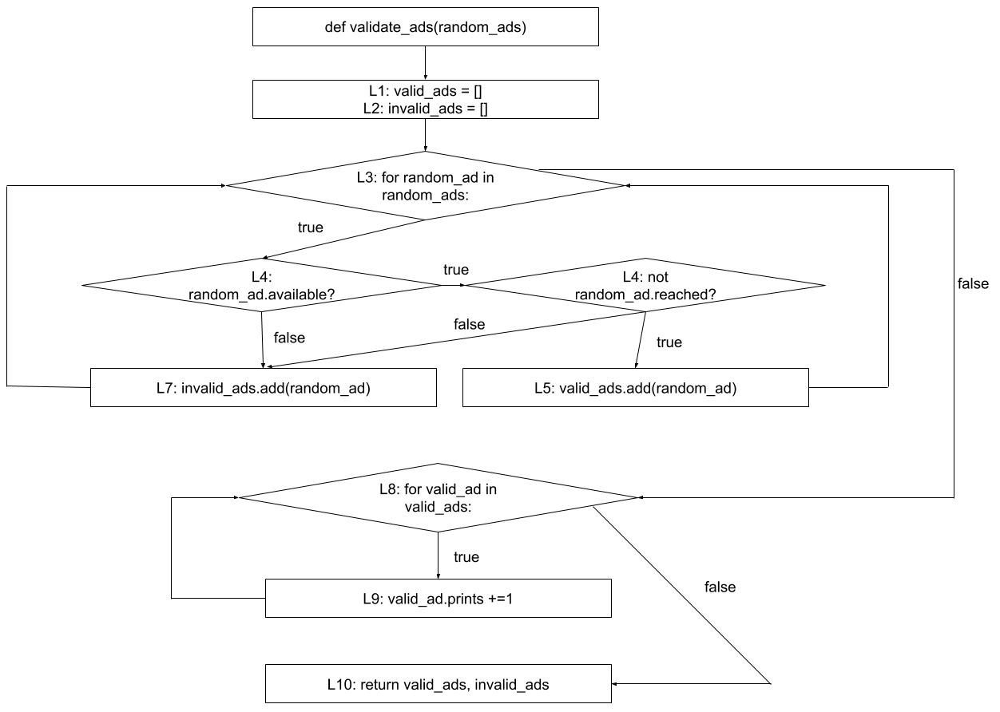
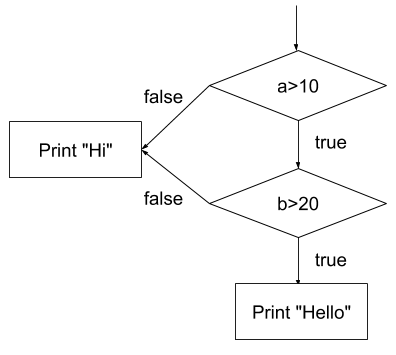

Structural Testing
In a previous chapter, we discussed how to test software using requirements as the main element to guide the testing. In this chapter, we will use the source code itself as a source of information to create tests. Techniques that use the structure of the source code as a way to guide the testing, are called structural testing techniques.
Understanding structural testing techniques means understanding the different coverage criteria. These coverage criteria relate closely to test coverage, a concept that many developers know. By test coverage, we mean the amount (or percentage) of production code that is exercised by the tests.
We will cover the following coverage criteria:
- Line coverage (and statement coverage)
- Block coverage
- Branch/Decision coverage
- Condition (Basic and Condition+Branch) coverage
- Path coverage
- MC/DC coverage
Watch a summary of one of our lectures in structural testing:
Why do we need structural testing?
In a nutshell, for two reasons: 1) to systematically derive tests from source code; 2) to know when to stop testing;
As a tester, when performing specification-based testing, your goal was clear: to derive classes out of the requirement specifications, and then to derive test cases for each of the classes. You were satisfied once all the classes and boundaries were systematically exercised.
The same idea applies to structural testing. First, it gives us a systematic way to devise tests. As we will see, a tester might focus on testing all the lines of a program; or focus on the branches and conditions of the program. Different criteria produce different test cases.
Second, to know when to stop. It is easy to imagine that the number of possible paths in a mildly complex piece of code is just too large, and exhaustive testing is impossible. Therefore, having clear criteria on when to stop helps testers in understanding the costs of their testing.
Line (and statement) coverage
As the name suggests, when determining the line coverage, we look at the number of lines of code that are covered by the tests (more specifically, by at least one test).
See the following example:
Requirement: Black-jack
The program receives the number of points of two blackjack players. The program must return the number of points of the winner. In blackjack, whoever gets closer to 21 points wins. If a player goes over 21 points, the player loses. If both players lose, the program must return 0.
See the following implementation for the requirement above:
public class BlackJack {
public int play(int left, int right) {
1. int ln = left;
2. int rn = right;
3. if (ln > 21)
4. ln = 0;
5. if (rn > 21)
6. rn = 0;
7. if (ln > rn)
8. return ln;
9. else
10. return rn;
}
}
Let us now devise and implement two test cases for this method:
public class BlackJackTests {
@Test
void bothPlayersGoTooHigh() {
int result = new BlackJack().play(30, 30);
assertThat(result).isEqualTo(0);
}
@Test
void leftPlayerWins() {
int result = new BlackJack().play(10, 9);
assertThat(result).isEqualTo(10);
}
}
The first test executes lines 1-7, 9, and 10 as both values are higher than 21.
This means that, after the bothPlayersGoTooHigh test, 9 out of the 10 lines are covered. Thus, line coverage is .
Line 8 is therefore the only line that the first test does not cover.
The second test, leftPlayerWins, complements the first test, and executes lines 1-3, 5, 7 and 8.
Both tests together now achieve a line coverage of , as together they cover
all the 10 different lines of the program.
More formally, we can compute line coverage as:
Why is line coverage problematic?
Using lines of code as a way to determine line coverage is a simple and straightforward idea. However, counting the covered lines is not always a good way of calculating the coverage. The number of lines in a piece of code depends on the decisions taken by the programmer who writes the code.
Let us look again at the Black Jack example.
The play method can also be written in 6 lines, instead of 10:
public int play(int left, int right) {
1. int ln = left;
2. int rn = right;
3. if (ln > 21) ln = 0;
4. if (rn > 21) rn = 0;
5. if (ln > rn) return ln;
6. else return rn;
}
The leftPlayerWins test covered lines in the previous
implementation of the play method.
In this new implementation, it covers lines 1-5, or lines.
The line coverage went up from to ,
while testing the same method with the same input.
This urges for a better representation of source code. One that is independent of the developers' personal code styles.
Some coverage tools measure coverage at statement level. Statements are the unique instructions that your JVM, for example, executes. This is a bit better, as splitting one line of code in two would not make a difference, but it is still not good enough.
Blocks and Control-Flow Graph
A control-flow graph (or CFG) is a representation of all paths that might be traversed during the execution of a piece of code. It consists of basic blocks, decision blocks, and arrows/edges that connect these blocks.
Let us use the Black Jack implementation to illustrate the difference between them:
public class BlackJack {
public int play(int left, int right) {
1. int ln = left;
2. int rn = right;
3. if (ln > 21)
4. ln = 0;
5. if (rn > 21)
6. rn = 0;
7. if (ln > rn)
8. return ln;
9. else
10. return rn;
}
}
A basic block is composed of "the maximum number of statements that are executed together no matter what happens". In the code above, lines 1-2 are always executed together. Basic blocks are often represented by a square.
At this moment, our control-flow graph looks like the following:

A decision block, on the other hand, represents all the statements in the source
code that can create different branches. See line 3: if (ln > 21). This if
statement creates a decision moment in the application: based on the condition, it is decided which code block will be executed next. Decision blocks are often represented by diamonds. This decision block happens right
after the basic block we created above, and thus, they are connected by means of
an edge.

A basic block has always a single outgoing edge. A decision block,
on the other hand, always has
two outgoing edges (indicating where you go in case of the decision being evaluated to true, and where you go in case the decision is evaluated to false).
In case of the decision block being evaluated to true, line 4 is executed, and the
program continues to line 5.
Otherwise, it proceeds straight to line 5, which is another decision block:

When you repeat the approach up to the end of the program, you end up with the following CFG:

Let us see an example of a more complex CFG:
Requirement: Counting words
Given a sentence, the program should count the number of words that end with either an "s" or an "r". A word ends when a non-letter appears.
A possible implementation for this program is:
public class CountLetters {
public int count(String str) {
1. int words = 0;
2. char last = ' ';
3. for (int i = 0; i < str.length(); i++) {
4. if (!Character.isLetter(str.charAt(i))
5. && (last == 's' || last == 'r')) {
6. words++;
7. }
8. last = str.charAt(i);
9. }
10. if (last == 'r' || last == 's')
11. words++;
12. return words;
}
}
The corresponding CFG:

Note that we split the for loop into three blocks: the variable initialisation, the decision block, and the increment.
Control-Flow Graphs in other languages. As you can see, this CFG representation is quite generic. Even when you use a different programming language to write the same program, you might end up with the same CFG. We can devise control-flow graphs for programs in any programming language. For example, see the piece of Python code below:
# random_ads is a list of ads.
# an ad contains three attributes:
# * available: true/false indicating whether the ad
# is still available.
# * reached: true/false indicating
# whether the number of paid prints was reached.
# * prints: an integer indicating the
# number of times that the ad was printed.
def validate_ads(random_ads):
01. valid_ads = []
02. invalid_ads = []
03. for random_ad in random_ads:
04. if random_ad.available and not random_ad.reached:
05. valid_ads.append(random_ad)
06. else:
07. invalid_ads.append(random_ad)
08. for valid_ad in valid_ads:
09. valid_ad.prints += 1
10. return valid_ads, invalid_ads
A CFG for this piece of code would look like:

We applied the same idea we have seen for Java programs in a Python program. The notions of basic and decision blocks are the same. A small difference to note is in the foreach loop (which is simply written using the for keyword in Python). Given that foreach loops do not follow the same format as traditional for loops, we modelled it differently: the foreach loop is fully represented by a single decision block (i.e., no blocks for the increment, or condition). As with any decision blocks, it has two outcomes, true and false.
Block coverage
We can use the control-flow graph to derive tests. A first idea would be to use blocks as a coverage criterion, in the same way we did with lines, but instead of aiming at covering 100% of the lines, we aim at covering 100% of the blocks.
The formula that measures block coverage is similar to the line coverage formula:
Note that blocks do not depend on how the developer wrote the code. Thus, it does not suffer from having different coverage numbers due to different programming styles.
For the CountLetters program, a test T1 = "cats and dogs" exercises all the blocks, and thus,
reaches 100% block coverage (follow the input in the control-flow graph and see all the blocks being executed):
@Test
void multipleWords() {
int words = new CountLetters().count("cats|dogs");
assertEquals(2, words);
}
Branch/Decision coverage
Complex programs often rely on lots of complex conditions (e.g., if statements composed of many conditions).
When testing these programs, aiming at 100% line or block coverage might not be enough to cover all the cases we want.
We need a stronger criterion.
Branch coverage (or decision coverage) works similar to line and statement coverage, except with branch coverage we count (or aim at covering) all the possible decision outcomes.
A test suite will achieve 100% branch (or decision) coverage when tests exercise all the possible outcomes of decision blocks:
Decisions (or branches) are easy to identify in a CFG.
Arrows with either true or false (i.e., both the arrows going out of a decision block) are branches, and therefore must be exercised.
Let's aim at 100% branch coverage for the Count Letter's count implementation above:
public class CountLettersTests {
@Test
void multipleMatchingWords() {
int words = new CountLetters()
.count("cats|dogs");
assertEquals(2, words);
}
@Test
void lastWordDoesntMatch() {
int words = new CountLetters()
.count("cats|dog");
assertEquals(1, words);
}
}
The first test (by providing
cats|dogsas input) covers all the branches in the left part of the CFG. The right part covers the topfalsebranch, because at some pointiwill be equal tostr.length(). The word "dogs" ends with an 's', so it also covers thetruebranch on the right side of the CFG. This gives the test branch coverage.The only branch that is now not covered is the
falsebranch at the bottom right of the CFG. This branch is executed when the last word does not end with an 'r' or an 's'. The second test executes this branch, by providing the stringcats|dogas input. Thus, the two tests together achieve a branch/decision coverage of .
In the video, we use squares to represent decision blocks. We did it just because otherwise the control-flow graph would not fit in the video. When doing control-flow graphs, please use diamonds to represent decision blocks.
(Basic) condition coverage
Branch coverage gives two branches for each decision, no matter how complicated or complex the decision is.
When a decision gets complicated, i.e., it contains more than one condition like a > 10 && b < 20 && c < 10,
branch coverage might not be enough to test all the possible outcomes of all these decisions.
For example, suppose one aims at testing the decision above.
A test T1 (a=20, b=10, c=5), which makes the condition true, and a test T2 (a=5, b=10, c=5), which makes the condition false, already fully cover this decision block, in terms of branch coverage.
However, these two tests do not cover all the
possibilities/different combinations for this decision to be evaluated to false; e.g., T3 (a=20, b=30, c=5), etc.
When using condition coverage as a criterion, we split each compound condition into multiple decision blocks. This means each of the conditions will be tested separately, and not only the "big decision block".
It is common to then re-design the CFG and make sure each decision block is now composed of a single condition. With the new CFG in hands (and with it new edges to explore), it works the same as branch coverage. The formula is basically the same, but now there are more decision outcomes to count:
We achieve 100% condition coverage when all of the outcomes of
all the conditions in our program have been exercised.
In other words, whenever all the conditions have been true and false at least once.
Once again we look at the program that counts the words ending with an 'r or an 's'. Let us now focus on achieving 100% (basic) condition coverage.
We start by building a more granular CFG:

You can see that this new CFG has more decision blocks than the previous one (six instead of three).
The multipleMatchingWords test now covers 7 out of 12 different decision outcomes.
Condition coverage is thus .
This is significantly less than the branch coverage that we obtain from the same multipleMatchingWords test,
showing how many more tests one would need
to achieve 100% condition coverage.
Condition + Branch coverage
Let's think carefully about condition coverage. If we only focus on exercising the individual conditions themselves, but do not think of the overall decision, we might end up in a situation like the one below.
Imagine the following program and its respective CFG:
void hello(int a, int b) {
if(a > 10 & b > 20) {
System.out.println("Hello");
} else {
System.out.println("Hi");
}
}

A test T1 = (20, 10) causes the first condition a > 10 to be true, and the
second condition b > 20 to be false. A test T2 = (5, 30) makes the first condition false, and the second condition true. Note that T1 and T2 together achieve 100% basic condition coverage. After all, both conditions a and b have been exercised as both true and false.
However, the final outcome of the entire decision was false in both tests. We never saw this program printing "Hello". We found a case where
we achieved 100% basic condition coverage, but only 50% branch coverage. This is not a smart testing strategy. This is why looking only at the conditions themselves while ignoring the overall outcome of the decision block is called
basic condition coverage.
In practice, whenever we use condition coverage, we actually perform branch + condition coverage. In other words, we make sure that we achieve 100% condition coverage (i.e., all the outcomes of all conditions are exercised) and 100% branch coverage (all the outcomes of the compound decisions are exercised).
The formula to calculate branch+condition coverage is as follows. Note how this formula gives us a clear differentiation between basic condition and decision+condition coverage:
While there is some confusion among the different terms, in this book, whenever we mention condition coverage or full condition coverage, we mean condition+branch coverage.
In addition, another common criterion is the Multiple Condition Coverage, or MCC. To satisfy the MCC criterion, a condition needs to be exercised in all its possible combinations. That would imply in 2^N tests, given N conditions.
Path coverage
With branch+condition coverage, we looked at each condition and branch individually. Such a criterion gives testers more branches to generate tests, especially when compared to the first criterion we discussed (line coverage).
However, although we are testing each condition to be evaluated as true and false, this does not ensure testing of all the paths that a program can have.
Path coverage does not consider the conditions individually. Rather, it considers the (full) combination of the conditions in a decision. Each of these combinations is a path. You might see a path as a unique way to traverse the CFG.
The calculation is the same as the other coverages:
See the following example that focus on a small piece of the count method:
if (!Character.isLetter(str.charAt(i))
& (last == 's' | last == 'r')) {
words++;
}
The decision in this if-statement contains three conditions and can be generalised to (A & (B | C)), with:
- A =
!Character.isLetter(str.charAt(i)) - B =
last == 's' - C =
last == 'r'
To get path coverage, we would have to test all the possible combinations of these three conditions.
We make a truth table to find the combinations:
| Tests | A | B | C | Outcome |
|---|---|---|---|---|
| 1 | T | T | T | T |
| 2 | T | T | F | T |
| 3 | T | F | T | T |
| 4 | T | F | F | F |
| 5 | F | T | T | F |
| 6 | F | T | F | F |
| 7 | F | F | T | F |
| 8 | F | F | F | F |
This means that, for full path coverage, we would need 8 tests just to cover this if statement.
It is a large number for just a single statement.
While this seems similar to the MCC criterion we quickly discussed above, imagine programs that rely on loops:
boolean shouldRun = true;
while(shouldRun) {
something();
something2();
shouldRun = something3();
}
To satisfy all the criteria we studied so far, we would need to exercise the shouldRun as being true and false. That does not happen with path coverage. To satisfy path coverage, we would need to test all the possible paths that can happen. The unbounded loop might make this program to iterate an infinite number of times. Imagine now a program with two unbounded loops together. How many different possible paths does this program have?
By aiming at achieving path coverage of our program, testers can indeed come up with good tests. However, the main issue is that achieving 100% path coverage might not always be feasible or too costly. The number of tests needed for full path coverage will grow exponentially with the number of conditions in a decision.
Lazy vs eager operators (and how they affect test case design)
Note that we have been avoiding lazy (short-circuit) operators (i.e., && and ||), on purpose, to make sure all conditions of the expression are evaluated. This allows us to devise test cases for each possible combination we see in the decision table. However, that might not be the case if we use lazy operators. Let's take as an example the same expression, but now using lazy operators: (A && (B || C))
We make the truth table to find the combinations:
| Tests | A | B | C | Outcome |
|---|---|---|---|---|
| 1 | T | T | dc | T |
| 2 | T | F | T | T |
| 3 | T | F | F | F |
| 4 | F | dc | dc | F |
('dc' represents "don't care" values.)
For this particular example, if the A is false, then the rest of the expression will be not evaluated anymore, because the result of the entire statement will be automatically false. Moreover, for the second part of the expression, if B is true, then the entire proposition (B || C) is already true, so we "don't care" about the value of the C.
Generically speaking, it might be not possible to devise test cases for all the combinations. As a tester, you just have to take such constraints into consideration.
Loop boundary adequacy
The section raised an interesting problem: in terms of coverage criteria, what to do when we have loops? When there is a loop, the block inside of the loop might be executed many times, making testing more complicated.
Think of a while(true) loop which can be non-terminating. If we wanted to be rigorous about it, we would have to test the program where the loop block is executed one time, two times, three times, etc. Imagine a for(i = 0; i < 10; i++) loop with a break inside of the body. We would have to test what happens if the loop body executes one time, two times, three times, ..., up to ten times.
It might be impossible to exhaustively test all the combinations.
How can we handle long-lasting loops (a loop that runs for many iterations), or unbounded loops (where we do not know how many times it will be executed)?
Given that exhaustive testing is impossible, testers often rely on the loop boundary adequacy criterion to decide when to stop testing a loop. A test suite satisfies this criterion if and only if for every loop:
- A test case exercises the loop zero times;
- A test case exercises the loop once;
- A test case exercises the loop multiple times.
The idea behind the criterion is to make sure the program is tested when the loop is never executed (does the program behave correctly when the loop is simply 'skipped'?), when it only iterates once (as we empirically know that algorithms may not handle single cases correctly), and many times.
Pragmatically speaking, the main challenge comes when devising the test case for the loop being executed multiple times. Should the test case force the loop to iterate for 2, 5, or 10 times? That requires a good understanding of the program/requirement itself. Our suggestion for testers is to rely on specification-based techniques. With an optimal understanding of the specs, one should be able to devise good tests for the particular loop.
MC/DC (Modified Condition/Decision Coverage)
Modified condition/decision coverage (MC/DC) looks at the combinations of conditions like path coverage does. However, instead of aiming at testing all the possible combinations, we follow a process in order to identify the "important" combinations. The goal of focusing on these important combinations is to manage the large number of test cases that one needs to devise when aiming for 100% path coverage.
The idea of MC/DC is to exercise each condition in a way that it can, independently of the other conditions, affect the outcome of the entire decision. In short, this means that every possible condition of each parameter must have influenced the outcome at least once.
If we take the decision block from path coverage example, A && (B || C), MC/DC dictates that:
- For condition A:
- There must be one test case where
A=true(say T1). - There must be one test case where
A=false(say T2). - T1 and T2 (which we call independence pairs) must have different outcomes (e.g., T1 makes the entire decision to evaluate to true, and T2 makes the entire decision to evaluate to false, or the other way around).
- In both test cases T1 and T2, variables B and C should be the same.
- There must be one test case where
- For condition B:
- There must be one test case where
B=true(say T3). - There must be one test case where
B=false(say T4). - T3 and T4 have different outcomes.
- In both test cases T3 and T4, variables A and C should be the same.
- There must be one test case where
- For condition C:
- There must be one test case where
C=true(say T5). - There must be one test case where
C=false(say T6). - T3 and T4 have different outcomes,
- In both test cases T3 and T4, variables A and B should be the same.
- There must be one test case where
Cost-wise, a relevant characteristic of MC/DC coverage is that, supposing that conditions only have binary outcomes (i.e., true or false), the number of tests required to achieve 100% MC/DC coverage is, on average, , where is the number of conditions in the decision.
Note that is definitely smaller than all the possible combinations ()!
Again, to devise a test suite that achieves 100% MC/DC coverage, we should devise test cases that, when combined, exercise all the combinations independently from the others.
The question is how to select such test cases. See the example below.
Imagine a program that decides whether an applicant should be admitted to the 'University of Character':
void admission(boolean degree, boolean experience, boolean character) {
if (character && (degree || experience)) {
System.out.println("Admitted");
} else {
System.out.println("Rejected");
}
}
The program takes three booleans as input (which, generically speaking, is the same as the A && (B || C) we just discussed):
- Whether the applicant has a good character (
trueorfalse), - Whether the applicant has a degree (
trueorfalse), - Whether the applicant has experience in a field of work (
trueorfalse).
If the applicant has good character and either a degree or experience in the field, he/she will be admitted. In any other case the applicant will be rejected.
To test this program, we first use the truth table for A && (B || C) to see all the combinations and their outcomes.
In this case, we have 3 decisions and is 8, therefore we have tests that go from 1 to 8:
| Tests | Character | Degree | Experience | Decision |
|---|---|---|---|---|
| 1 | T | T | T | T |
| 2 | T | T | F | T |
| 3 | T | F | T | T |
| 4 | T | F | F | F |
| 5 | F | T | T | F |
| 6 | F | T | F | F |
| 7 | F | F | T | F |
| 8 | F | F | F | F |
Our goal will be to apply the MC/DC criterion to these test cases, and select , in this case , tests. In this case, the 4 four tests that satisfy that MC/DC coverage is {2, 3, 4, 6}.
How did we find them? We go test by test, condition by condition.
We start with selecting the pairs of combinations (or tests) for the Character parameter.
In test 1, we see that
Character,Degree, andExperienceare alltrueand theDecision(i.e., the outcome of the entire boolean expression) is alsotrue. We now look for another test in this table, where only the value ofCharacteris the opposite of the value in test 1, but the others (DegreeandExperience) are still the same. This means we have to look for a test whereCharacter = false,Degree = true,Experience = true, andDecision = false. This combination appears in test 5.Thus, we just found a pair of tests (again, called independence pairs), and , where
Characteris the only parameter which changed and the outcome (Decision) changed as well. In other words, a pair of tests where theCharacterindependently influences the outcome (Decision). Let's keep the pair in our list of test cases.We could have stopped here and moved to the next variable. After all, we already found an independence pair for
Character. However, finding them all might help us in reducing the number of test cases at the end, as you will see. So let us continue and we look at the next test. In test 2,Character = true,Degree = true,Experience = false, andDecision = true. We repeat the process and search for a test whereCharacteris the opposite of the value in test 2, butDegreeandExperienceremain the same (Degree = true,Experience = false). This set appears in test 6.This means we just found another pair of tests, and , where
Characteris the only parameter which changed and the outcome (Decision) changed as well.Again, we repeat the process for test 3 (
Character = true,Degree = false,Experience = true) and find that theCharacterparameter in test 7 (Character = false,Degree = false,Experience = true) is the opposite of the value in test 3 and changes the outcome (Decision).For test 4 (
Character = true,Degree = false,Experience = false). Its pair is test 8 (Character = false,Degree = false,Experience = false). Now, the outcome of both tests is the same (Decision = false). This means that the pair does not show howCharactercan independently affect the overall outcome; after all,Characteris the only thing that changes in these two tests, but the outcome is still the same.
As we do not find another suitable pair when repeating the process for tests 5, 6, 7 and 8, we move on from the Character parameter to the Degree parameter. We repeat the same process, but now we search for the opposite value of parameter Degree whilst Character and Experience stay the same.
For test 1 (
Charater = true,Degree = true,Experience = true), we search for a test where (Charater = true,Degree = false,Experience = true). This appears to be the case in test 3. However, the outcome for both test cases stay the same. Therefore, does not show how theDegreeparameter can independently affect the outcome.After repeating all the steps for the other tests we find only to have different values for the
Degreeparameter where the outcome also changes.Finally we move to the
Experienceparameter. As with theDegreeparameter, there is only one pair of combinations that will work, which is .
We highly recommend carrying out the entire process yourself to get a feeling of how the process works!
We now have all the pairs for each of the parameters:
Character: {1, 5}, {2, 6}, {3, 7}Degree: {2, 4}Experience: {3, 4}
Having a single independence pair per variable (Character, Degree and Experience) is enough. After all, we want to minimise the total number of tests, and we know that we can
achieve this with tests.
We do not have any choices with conditions Degree and Experience, as we found only one pair of tests for each parameter.
This means that we have to test combinations 2, 3 and 4.
Lastly, we need to find the appropriate pair of A. Note that any of them would fit. However, we want to reduce the total amount of tests in the test suite (and again, we know we only need 4 in this case).
If we were to pick either test 1 or test 5 we would have to include either test 5 or test 1 as well, as they are their opposites, but therefore unneccesarily increasing our number of tests. In order to keep our test cases in accordance to or in this case , thus 4 test cases we can either add test 6 or test 7, as their opposites (test 2 or 3) are already included in our test cases. Randomly, we pick test 6.
You can indeed have more than one set of tests that achieve 100% MC/DC. All solutions are equally acceptable.
Therefore, the tests that we need for 100% MC/DC coverage are {2, 3, 4, 6}. These are the only 4 tests we need. This is indeed cheaper when compare to the 8 tests we would need for path coverage.
Let us now discuss some details about the MC/DC coverage:
We have applied what we call unique-cause MC/DC criteria. We identify an independence pair (T1, T2), where only a single condition changes between T1 and T2, as well as the final outcome. That might not be possible in all cases. For example,
(A and B) or (A and C). Ideally, we would demonstrate the independence of the first A, B, the second A, and C. It is however impossible to change the first A and not change the second A. Thus, we can not demonstrate the independence of each A in the expression. In such cases, we then allow A to vary, but we still fix all other variables (this is what is called masked MC/DC).It might not be possible to achieve MC/DC coverage in some expressions. See
(A and B) or (A and not B). While the independence pairs (TT, FT) would show the independence of A, there are no pairs that show the independence of B. While logically possible, in such cases, we recommend the developer to revisit the (degenerative) expression as it might had been poorly designed. In our example, the expression could be reformulated to simplyA.Mathematically speaking, is the minimum number of tests required for MC/DC coverage (and the theoretical upper bound). However, empirical studies indeed show that is often the required number of tests.
Criteria subsumption
You might have noticed that the criteria we studied became more rigorous and demanding throughout this chapter. We started our discussion with line coverage. Then we discussed branch coverage, and we noticed that we could generate more tests if we focused on branches. Then, we discussed branch + condition coverage, and we noticed that we could generate even more tests, if we also focused on the conditions.
There is a relationship between these criteria. Some strategies subsume other strategies. Formally, a strategy X subsumes strategy Y if all elements that Y exercises are also exercised by X. You can see in the figure below the relationship between the coverage criteria we studied.

For example, in the picture, one can see that branch coverage subsumes line coverage. This means that 100% of branch coverage always implies 100% line coverage. However, 100% line coverage does not imply 100% branch coverage. Moreover, 100% of branch + condition coverage always implies 100% branch coverage and 100% line coverage.
The effectiveness of structural testing
A common question among practitioners is whether structural testing or, in their words, test coverage, matters.
While researchers have not yet found a magical coverage number that one should aim for, they have been finding interesting evidence pointing towards the benefits of performing structural testing.
We quote two of these studies:
- Hutchins et al.: "Within the limited domain of our experiments, test sets achieving coverage levels over 90% usually showed significantly better fault detection than randomly chosen test sets of the same size. In addition, significant improvements in the effectiveness of coverage-based tests usually occurred as coverage increased from 90% to 100%. However, the results also indicate that 100% code coverage alone is not a reliable indicator of the effectiveness of a test set."
- Namin and Andrews: "Our experiments indicate that coverage is sometimes correlated with effectiveness when [test suite] size is controlled for, and that using both size and coverage yields a more accurate prediction of effectiveness than [test suite] size alone. This in turn suggests that both size and coverage are important to test suite effectiveness."
For interested readers, an extensive literature review on the topic can be found in Zhu, H., Hall, P. A., & May, J. H. (1997). Software unit test coverage and adequacy. ACM computing surveys (csur), 29(4), 366-427.
Structural testing vs structural coverage
A common misconception among practitioners to confuse structural testing with structural coverage.
Structural testing means leveraging the structure of the source code to systematically exercise the system under test. When compared to specification-based testing, we note that structural testing is:
More objective. In other words, it does not depend on the opinions and experience of the tester. While different testers might come up with different specification-based tests, they would come with similar structural tests.
Implementation-aware. Implementations can vary from the specifications. After all, there are so many ways one can implement a program. Structural testing enables testers to explore the precise implementation.
On the other hand, structural testing is a check and balance (as Chilenski puts it) on the specification-based tests. Structural testing confirms and complements the tests that we derived before.
It is common to see developers running their coverage tools and writing tests for the outputs they observe. Developers that are mostly focused on (simply) achieving high structural coverage are missing the main point of structural testing.
Again, structural testing should complement your requirements-based testing. As Chilenski suggests (see Figure 3 in his paper), the first step of a tester should be to derive test cases out of any requirements-based technique. Once requirements are fully covered, testers then perform structural testing to cover what is missing from the structural-point of view. Any divergences should be brought back to the requirements-based testing phase: why did we not find this class/partition before? Once requirements and structure are covered, one can consider the testing phase done.
Therefore, do not aim at 100% coverage. Use structural testing to complement your specification-based tests.
Exercises
For the first couple of exercises we will use the following code:
public boolean remove(Object o) {
01. if (o == null) {
02. for (Node<E> x = first; x != null; x = x.next) {
03. if (x.item == null) {
04. unlink(x);
05. return true;
}
}
06. } else {
07. for (Node<E> x = first; x != null; x = x.next) {
08. if (o.equals(x.item)) {
09. unlink(x);
10. return true;
}
}
}
11. return false;
}
This is the implementation of JDK8's LinkedList remove method. Source: OpenJDK.
Exercise 1.
Give a test suite (i.e. a set of tests) that achieves line coverage on the remove method.
Use as few tests as possible.
The documentation on Java 8's LinkedList methods, that may be needed in the tests, can be found in its Javadoc.
Exercise 2.
Create the control-flow graph (CFG) for the remove method.
Exercise 3. Look at the CFG you just created. Which of the following sentences is false?
A minimal test suite that achieves 100% basic condition coverage has more test cases than a minimal test suite that achieves 100% branch coverage.
The method
unlink()is for now treated as an 'atomic' operation, but also deserves specific test cases, as its implementation might also contain decision blocks.A minimal test suite that achieves 100% branch coverage has the same number of test cases as a minimal test suite that achieves 100% full condition coverage.
There exists a single test case that, alone, is able to achieve more than 50% of line coverage.
Exercise 4.
Give a test suite (i.e. a set of tests) that achieves branch coverage on the remove method.
Use as few tests as possible.
The documentation on Java 8's LinkedList methods, that may be needed in the tests, can be found in its Javadoc.
Exercise 5.
Consider the decision (A or C) and B with the corresponding decision table:
| Decision | A | B | C | (A | C) & B |
|---|---|---|---|---|
| 1 | T | T | T | T |
| 2 | T | T | F | T |
| 3 | T | F | T | F |
| 4 | T | F | F | F |
| 5 | F | T | T | T |
| 6 | F | T | F | F |
| 7 | F | F | T | F |
| 8 | F | F | F | F |
What is the set with the minimum number of tests needed for MC/DC (Modified Condition / Decision Coverage)?
For the next three exercises use the code below.
This method returns the longest substring that appears at both the beginning and end of the string without overlapping.
For example, sameEnds("abXab") returns "ab".
public String sameEnds(String string) {
01. int length = string.length();
02. int half = length / 2;
03. String left = "";
04. String right = "";
05. int size = 0;
06. for (int i = 0; i < half; i++) {
07. left = left + string.charAt(i);
08. right = string.charAt(length - 1 - i) + right;
09. if (left.equals(right)) {
10. size = left.length();
}
}
11. return string.substring(0, size);
}
This code is based on the same ends problem.
Exercise 6. Draw the control-flow graph (CFG) of the source code above.
Exercise 7. Give a test case (by the input string and expected output) that achieves 100% line coverage.
Exercise 8.
Given the source code of the sameEnds method. Which of the following statements is not correct?
- It is possible to devise a single test case that achieves 100% line coverage and 100% decision coverage.
- It is possible to devise a single test case that achieves 100% line coverage and 100% (basic) condition coverage.
- It is possible to devise a single test case that achieves 100% line coverage and 100% decision + condition coverage.
- It is possible to devise a single test case that achieves 100% line coverage and 100% path coverage.
Now consider this piece of code for the FizzBuzz problem.
Given an integer n, it returns the string form of the number followed by "!".
So the integer 8 would yield "8!".
Except if the number is divisible by 3 it returns "Fizz!" and if it is divisible by 5 it returns "Buzz!".
If the number is divisible by both 3 and 5 it returns "FizzBuzz!"
Based on a CodingBat problem.
public String fizzString(int n) {
1. if (n % 3 == 0 && n % 5 == 0)
2. return "FizzBuzz!";
3. if (n % 3 == 0)
4. return "Fizz!";
5. if (n % 5 == 0)
6. return "Buzz!";
7. return n + "!";
}
Exercise 9. Assume we have two test cases with an input integer: T1 = 15 and T2 = 8.
What is the branch+condition coverage these test cases give combined?
What is the decision coverage?
The next couple of exercises use Java's implementation of the LinkedList's computeIfPresent() method.
public V computeIfPresent(K key, BiFunction<? super K, ? super V, ? extends V> rf) {
01. if (rf == null) {
02. throw new NullPointerException();
}
03. Node<K,V> e;
04. V oldValue;
05. int hash = hash(key);
06. e = getNode(hash, key);
07. oldValue = e.value;
08. if (e != null && oldValue != null) {
09. V v = rf.apply(key, oldValue);
10. if (v != null) {
11. e.value = v;
12. afterNodeAccess(e);
13. return v;
}
else {
14. removeNode(hash, key, null, false, true);
}
}
15. return null;
}
Exercise 10. Draw the control-flow graph (CFG) of the method above.
Exercise 11. How many tests do we need at least to achieve line coverage?
Exercise 12. How many tests do we need at least to achieve branch coverage?
Exercise 13. Which of the following statements concerning the subsumption relations between test adequacy criteria is true:
- MC/DC subsumes statement coverage.
- Statement coverage subsumes branch coverage.
- Branch coverage subsumes path coverage.
- Basic condition coverage subsumes branch coverage.
Exercise 14. A test suite satisfies the loop boundary adequacy criterion if for every loop L:
- Test cases iterate L zero times, once, and more than once.
- Test cases iterate L once and more than once.
- Test cases iterate L zero times and one time.
- Test cases iterate L zero times, once, more than once, and N, where N is the maximum number of iterations.
Exercise 15.
Consider the expression ((A and B) or C).
Devise a test suite that achieves Modified Condition / Decision Coverage (MC/DC).
Exercise 16.
Draw the truth table for expression A and (A or B).
Is it possible to achieve MC/DC coverage for this expression? Why (not)?
What feedback should you give to the developer, that used this expression, about your finding?
References
Chapter 4 of the Foundations of software testing: ISTQB certification. Graham, Dorothy, Erik Van Veenendaal, and Isabel Evans, Cengage Learning EMEA, 2008.
Chapter 12 of the Software Testing and Analysis: Process, Principles, and Techniques. Mauro Pezzè, Michal Young, 1st edition, Wiley, 2007.
Zhu, H., Hall, P. A., & May, J. H. (1997). Software unit test coverage and adequacy. ACM computing surveys (csur), 29(4), 366-427.
Hayhurst, K., Veerhusen, D., Chilenski, J., Rierson, L. A Practical Tutorial on Modified Condition/Decision Coverage, 2001. URL: https://shemesh.larc.nasa.gov/fm/papers/Hayhurst-2001-tm210876-MCDC.pdf. Short version: https://www.cs.odu.edu/~mln/ltrs-pdfs/NASA-2001-20dasc-kjh.pdf.
Chilenski, J. J. (2001). An investigation of three forms of the modified condition decision coverage (MCDC) criterion. Office of Aviation Research. http://www.tc.faa.gov/its/worldpac/techrpt/ar01-18.pdf
Cem Kaner on Code Coverage: http://www.badsoftware.com/coverage.htm
Arie van Deursen on Code Coverage: http://avandeursen.com/2013/11/19/test-coverage-not-for-managers/
Hutchins, M., Foster, H., Goradia, T., & Ostrand, T. (1994, May). Experiments of the effectiveness of data flow-and control flow-based test adequacy criteria. In Proceedings of the 16th international conference on Software engineering (pp. 191-200). IEEE Computer Society Press.
Namin, A. S., & Andrews, J. H. (2009, July). The influence of size and coverage on test suite effectiveness. In Proceedings of the eighteenth international symposium on Software testing and analysis (pp. 57-68). ACM.